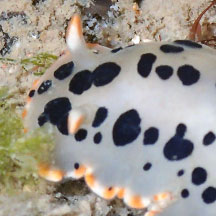
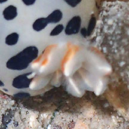
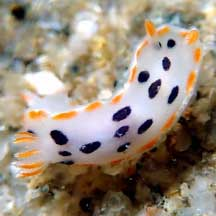
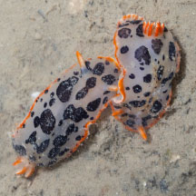
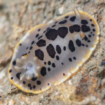
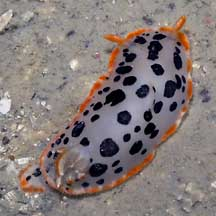

|
|
| nudibranchs text index | photo index |
| Phylum Mollusca > Class Gastropoda > sea slugs > Order Nudibranchia |
| Black cow
nudibranch Chromodoris orientalis Family Chromodorididae updated May 2025 Where seen? This small colourful nudibranch with a cow-like pattern is sometimes seen on our Northern shores. On rocky shores with silty sandy bottoms. Features: 2-3cm. Body broad usually white with black spots. Edges of the body are orange with no black spots. The feathery gills and rhinophores tips are orange. According to Bill Rudman, they have tiny glands around the edge of the mantle that secretes defensive substances to deter predators. Sometimes confused with the Maroon cow nudibranch also found in similar habitat. The Maroon cow nudibranch has white rhinophores and gills and maroon spots, while the Black cow nudibranch has orange rhinophores and gills and black spots. What does it eat? Members of the Family Chromodorididae absorb the toxic chemicals in their sponge food and incorporate these chemicals into the mantle glands on their backs where they repel predators. |
 |
 |
| Black cow nudibranchs on Singapore shores |
On wildsingapore
flickr
|
| Other sightings on Singapore shores |
 Changi Loyang, May 21 Photo shared by Jianlin LIu on facebook. |
 Changi, Oct 25 Photo shared by Marcus Ng on facebook. |
 Chek Jawa, May 25 Photo shared by Marcus Ng on facebook. |
 Beting Bronok, Jul 05 |
Links
References
|